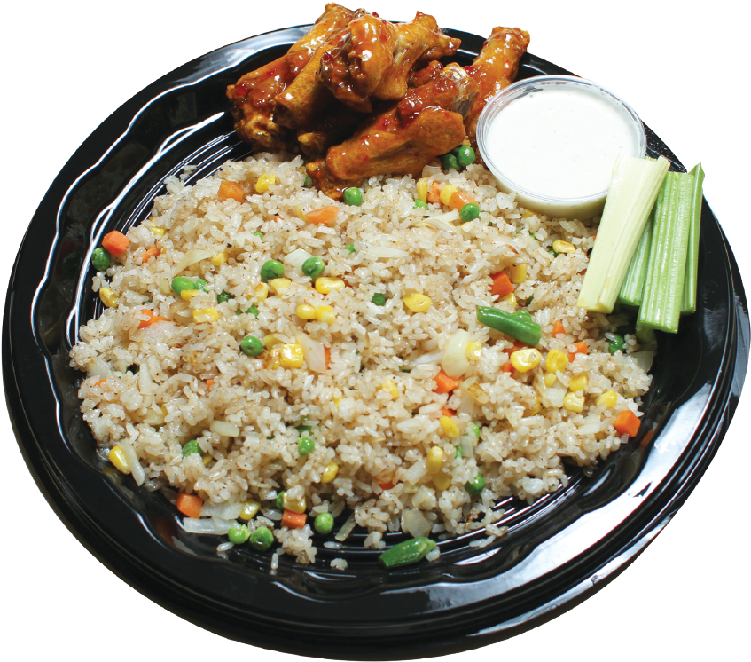

Fried Rice
Fried Rice

Fried Rice Recipe
Description:
Fried rice is a delicious and easy-to-make dish that is perfect for a quick weeknight dinner or for meal prep. This recipe features a mix of vegetables, protein, and rice all cooked together in a wok or pan.
Ingredients:
- 2 cups cooked rice (preferably day-old)
- 1/2 cup diced onion
- 1/2 cup diced carrots
- 1/2 cup frozen peas
- 2 cloves garlic, minced
- 2 eggs, beaten
- 3 tablespoons soy sauce
- 2 tablespoons vegetable oil
Instructions:
- Heat the vegetable oil in a large wok or pan over medium-high heat.
- Add the diced onion, carrots, and garlic, and stir-fry for 2-3 minutes until the vegetables are slightly softened.
- Add the frozen peas and stir-fry for another minute.
- Push the vegetables to one side of the wok or pan, and add the beaten eggs to the other side. Scramble the eggs until cooked through, then mix them with the vegetables.
- Add the cooked rice to the wok or pan, and stir-fry everything together for 2-3 minutes until the rice is heated through and slightly crispy.
- Drizzle the soy sauce over the fried rice and stir everything together until well combined.
- Serve hot and enjoy!
Return to Recepie